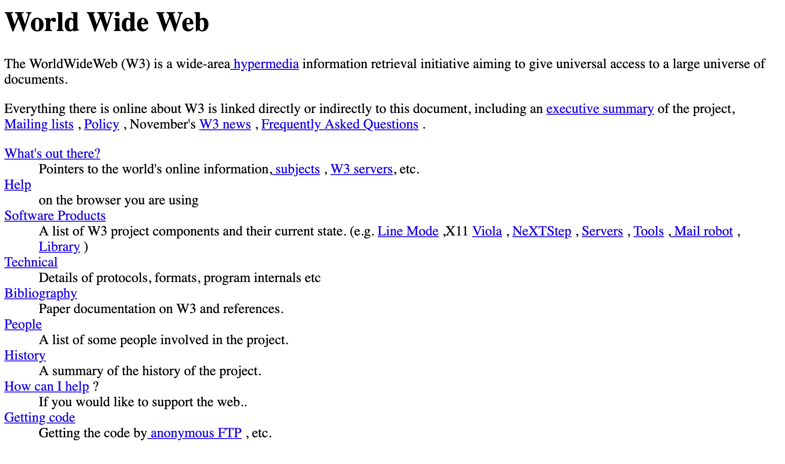
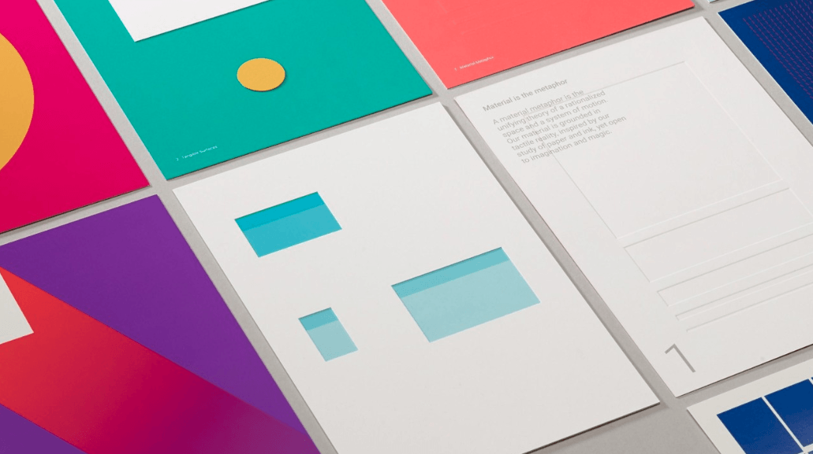

A história do web design ainda está se formando e não é tão antiga, tendo sua origem no ínicio dos anos 90, ainda como fonte de estúdos e hoje é usada pela grande maioria da população como parte essencial de seu dia a dia.
De 1991 (lançamento do primeiro site) até hoje, a internet evoluiu numa velocidade muito grande, chegando hoje aos celulares, computadores, e também objetos que ficam dentro de nossas casas, desde televisões, robôs limpadores, lâmpadas e muito mais, com isso o design para web teve que evoluir.
Em agosto de 1990 – Tim Berners-lee desenvolveu e rodou o primeiro navegador e servidor web. Uma cópia do primeiro site ainda está disponível no w3.org. O site possuía alguns links que serviam para explicar o que era a internet.
Em 1994 o primeiro site de delivery foi lançado pela Pizza Hut, em Santa Cruz – California, permitindo o pedido de pizzas pela internet.
Também em 1994, foi formado o World Wide Web Consortium (W3C), que começou a definir os padrões que seriam usados nas linguagem de programações, e até hoje é a principal referência que auxilia na produção de novos browsers e linguagens usadas, como HTML, Javascript, etc.
Em 1996 temos também o lançamento de um dos maiores e-commerces dos tempos atuais: Amazon. Fundada por Jeff Bezos, a Amazon começou como uma grande livraria online, e foi expandindo seus serviços para CDs, DVDs, roupas, até se tornar a gigante de hoje em dia
Descontinuado hoje em dia, o Flash era uma plataforma que permitia aos designers a incorporação de música, vídeo e animação nos sites, criando uma experiência interativa que antes não era possível. O Flash marcou uma geração, trazendo grandes inovações tecnológicas a web, como menus interativos, páginas de abertura, animações e botões com visuais detalhados.
Até poucos anos atrás, ainda que responsivos, os sites eram mais complexos, e hoje mais e mais performance tem se tornado um dos principais tópicos, já que o acesso via celulares já passou o acesso via desktop (cerca de 60% dos acessos a websites são realizados com celulares).
Esta demanda está tornando ainda mais importante a performance de um site, sendo fator importante até para aparecer nas páginas de busca. E uma tendência em design que vem se tornando mais perto é o Flat, onde você utiliza de cores e elementos mais simples para trazer uma melhor experiência ao usuário.
A Amazon é um excelente exemplo de como um design de eCommerce deve ser – seu site com visual amigável para os usuários faz com que seja fácil para os clientes encontrarem o que precisam.
Apesar de ter milhões de produtos disponíveis, a Amazon faz um ótimo trabalho para simplificar sua interface. Por exemplo, todas as categorias de produtos estão escondidas na barra lateral.
Deste modo, os usuários não vão se sentir sobrecarregados pelo excesso de opções, deixando o site mais fácil de se navegar.
A Simply Chocolate possui uma loja online impressionante. Ela pode parecer um pouco inusitada para alguns, mas os seus elementos de design a separam da maior parte dos sites de eCommerce.
Por exemplo, o menu de navegação usa um layout lateral para dar um visual único, enquanto as interações da página também fazem com que a experiência de navegação seja mais dinâmica. Isso pode parecer um recurso trivial, mas pode encorajar os visitantes a ficarem mais tempo no seu site.
A loja virtual da Apple trabalha para destacar os seus produtos de alta qualidade. Diferentemente da maioria dos sites de eCommerce, as suas páginas de produto funcionam como se fossem uma landing page, com propostas de venda únicas, prova social, benefícios-chave e assim em diante.
O site também ilustra porque o design minimalista não é apenas esteticamente agradável, mas também é útil para atrair a atenção dos usuários. Com um plano de fundo simples e bastante espaço em branco, os clientes não vão se distrair das grandes imagens dos produtos em close.